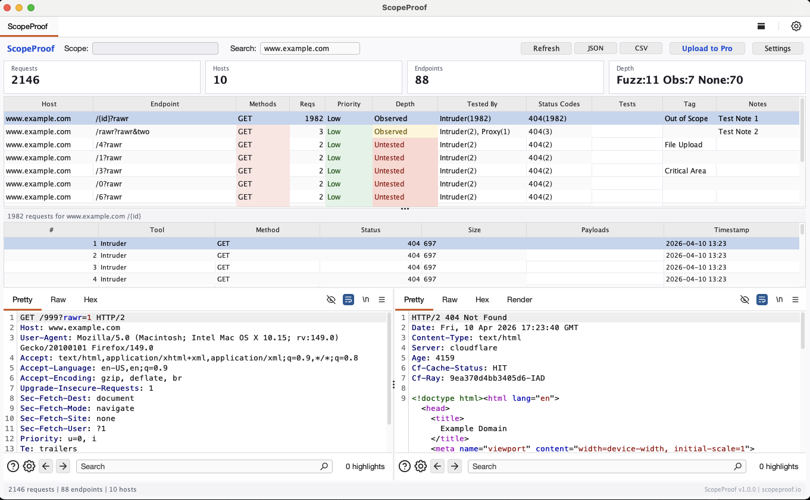

Real-time coverage tracking for Burp Suite. Know what you tested, prove it to your clients.
v1.0.0 · Montoya API · Java
Pending BApp Store approval — manual install via .jar for now
Setup
Three steps. No account required. No configuration needed.
In Burp Suite, go to Extensions > Installed > Add. Set the type to Java and select the JAR file.
A ScopeProof tab appears automatically. Test normally and coverage data populates in real time.
In Action

Features
Captures traffic from Proxy, Repeater, Intruder, Scanner, and all other Burp tools automatically.
Define your own payloads by category. Paste lists, load from files, or tag directly from requests. Zero false positives.
Tagged payloads appear as Intruder payload generators. Select by category or use all at once.
Add notes and tags to any endpoint. Document findings as you go. Persists across Burp sessions.
Export full endpoint data with testing depth, tool usage, and metadata for reports and analysis.
Coverage data, payloads, and annotations survive Burp restarts. Pick up right where you left off.
ScopeProof Pro turns your coverage data into branded deliverables your clients can see and trust. Sign up free to get started.
Free to start. No credit card required.